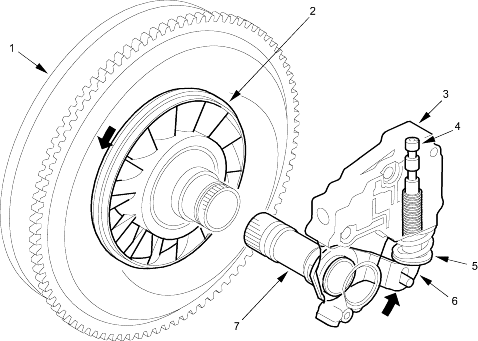

Automatic Transmission
|
14-42 |
Hydraulic Control (cont'd)
Regulator Valve
The regulator valve maintains a constant hydraulic pressure from the ATF pump to the hydraulic control system, while also furnishing fluid to the lubricating system and torque converter. The fluid from the ATF pump flows through B and B'. Fluid entering from B flows through the valve orifice to the A cavity. This pressure of the A cavity pushes the regulator valve to the right side and this movement of the regulator valve uncovers the fluid port to the torque converter and the relief valve. The fluid flows out to the torque converter and the relief valve and the regulator valve moves to the left side. According to the level of the hydraulic pressure through B, the position of the regulator valve changes and the amount of fluid from B' through torque converter also changes. This operation is continued, maintaining the line pressure.
NOTE: When used, ''left'' or ''right'' indicates direction on the illustration below.
Increases in hydraulic pressure according to torque are performed by the regulator valve using stator torque reaction. The stator shaft is splined with the stator in the torque converter and its arm end contacts the regulator spring cap. When the vehicle is accelerating or climbing (Torque Converter Range), stator torque reaction acts on the stator shaft and the stator arm pushes the regulator spring cap in the direction of the arrow in proportion to the reaction. The stator reaction spring compresses and the regulator valve moves to increase the line pressure which is regulated by the regulator valve. The line pressure reaches its maximum when the stator torque reaction reaches its maximum.
 |
|